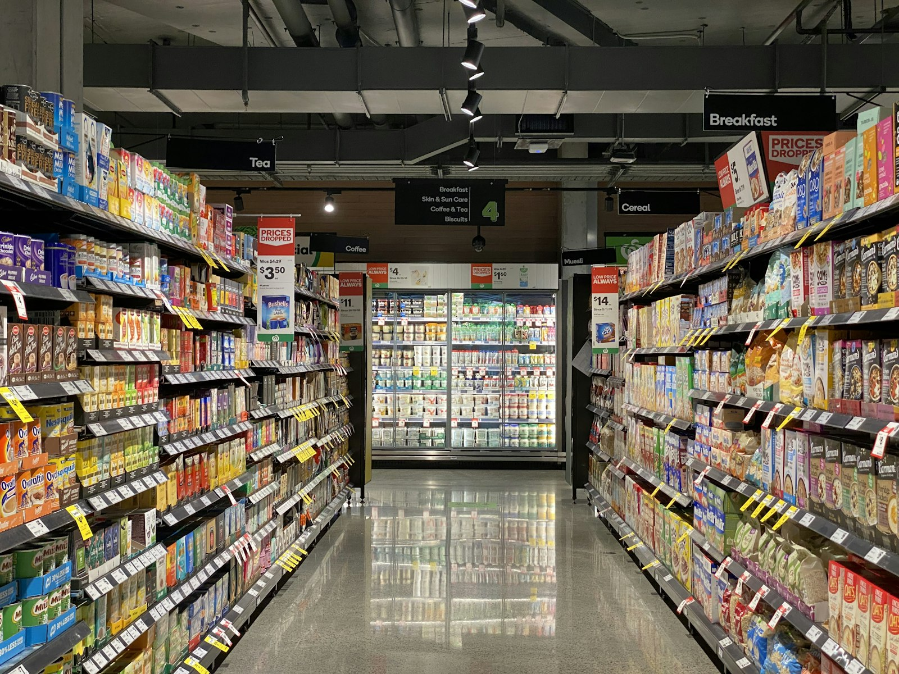

Kínálat
Termékkörök, márkák, akciók.

Nézze meg, mit talál nálunk, és mikor vagyunk nyitva.
A végleges szöveg és a fotók az Önök anyagaiból készülnének.
Termékkörök, márkák, akciók.
Mindig naprakészen, ünnepnapokkal is.
Térkép, parkolás, bejárat.
Ez az adat a nyilvános térképi adatbázisból jött. Ha nem pontos, egy perc javítani.
